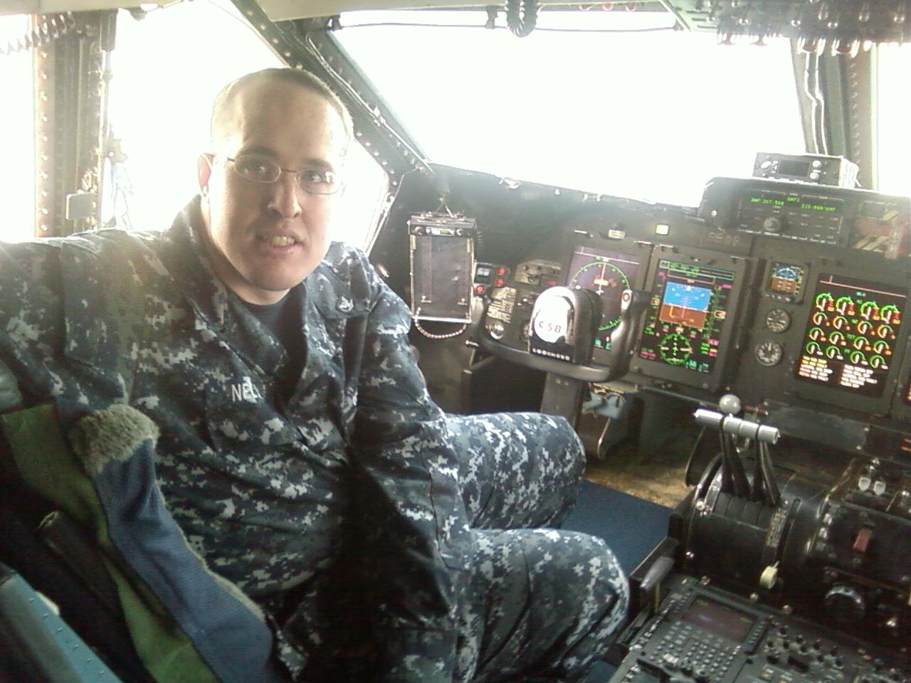
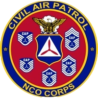
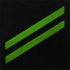
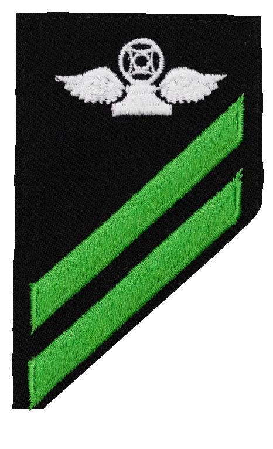
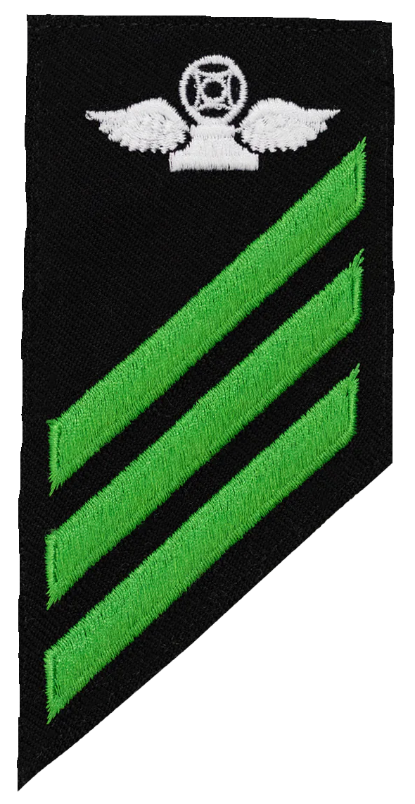
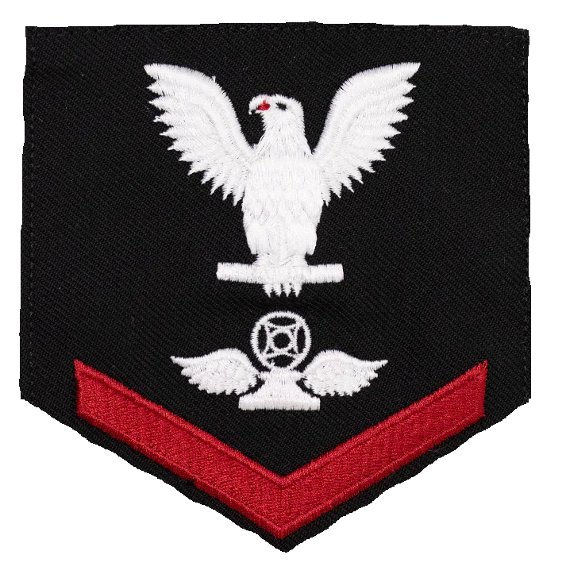

|  |  |
Jonah served in the Navy starting in 2007, where he trained to become an air traffic controller. Navy Air Traffic Control school is a four month intensive training process at Naval Air Technical Training Center in Pensacola, Florida. After qualifying as an air traffic controller he was sent to California, where he trained on many different air traffic control positions, and was promoted to third class petty officer, before an injury required that he leave the Navy after an extended stay in the hospital.
| Airman Apprentice | Airman Apprentice Air Traffic Controller |
Airman Air Traffic Controller |
Petty Officer Third Class Air Traffic Controller |
|---|---|---|---|
|  |  |  |  |
After leaving the Navy, Jonah spent time healing and then eventually became involved in Civil Air Patrol, a corporation that serves as an auxiliary to the United States Air Force in search and rescue missions. There he was promoted to Staff Sergeant and then Technical Sergeant, where he currently serves as squadron non-commissioned officer and personnel officer.